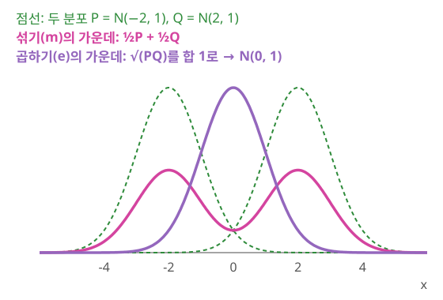
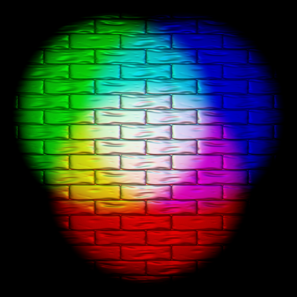
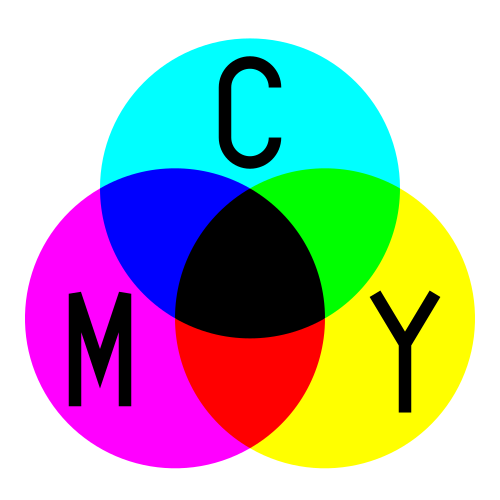

두 가지 직선: 섞는 길과 곱하는 길
쌍대 접속은 식으로는 이해했지만, 확률분포의 공간에 왜 하필 이런 짝이 저절로 생길까? 두 분포
역사: 아마리 순이치 (甘利俊一, Shun-ichi Amari, 1936–)
아마리 순이치는 도쿄대학에서 수리공학을 공부했고, 통계학자가 아니라 신경회로망 이론가로 먼저 이름을 알렸다. 그가 뒤에 1985년 책의 머리말에서 돌아본 바로는, 대학원생이던 1959년에 이미 정규분포들의 공간을 휘어진 쌍곡 평면으로 볼 수 있다는 것을 알아챘다. 1968년에는 정보의 기하학적 이론을 다룬 일본어 책을 냈다. 피셔 정보행렬(매개변수를 조금 바꿀 때 분포가 얼마나 달라지는지를 재는 행렬)을 이 공간의 리만 계량으로 보는 생각은 C. R. 라오(Rao)가 1945년 논문에서 이미 내놓았다. 계량만 있으면 곧은 길은 레비-치비타 측지선 하나로 끝나는 것처럼 보였다.
계량만으로 풀리지 않는 물음은 통계학 안에서 나왔다. 1975년 브래들리 에프런(Bradley Efron)은 최대가능도 추정이 얼마나 정확한지를 한 단계 더 깊이(이차 효율) 따지다가, 지수족(
아마리는 에프런의 논문에 크게 자극받아 1980년대 초 이 접속들을 정리했다. 1982년 『Annals of Statistics』 논문 「휘어진 지수족의 미분기하학 — 곡률과 정보 손실」에서 그는 추정이 잃는 정보를 두 곡률로 나누었다. 하나는 모형이 한 접속으로 보아 얼마나 휘었는가이고, 다른 하나는 추정 방법이 짝 접속으로 보아 얼마나 휘었는가인데, 최대가능도 추정에서는 둘째가 0이 된다. 에프런의 물음에 답하는 데 접속이 하나가 아니라 짝으로 필요했던 셈이다. 1985년 책 『통계학의 미분기하학적 방법(Differential-Geometrical Methods in Statistics)』의 머리말에서 그는 이 분야에 「정보기하학」이라는 이름을 붙였다. 이 기하학은 뒤에 그가 처음 연구하던 신경망의 학습 알고리즘으로 되돌아온다.
더하기와 곱하기
동전 두 개로 먼저 보자. 앞면 확률이 0.1인 동전과 0.5인 동전의 "가운데 동전"은 두 가지로 만들 수 있다. 하나는 섞기다. 두 동전 가운데 하나를 반반의 확률로 골라 던지면 앞면 확률은
분포를 결합하는 이 두 방식, 분포를 더하는 것(혼합, mixture)과 곱하는 것(곱해서 합치기, exponential)이 두 가지 직선을 낳는다. 덧셈이 자연스러운 좌표계에서의 직선이 m-측지선이고, 곱셈이 자연스러운 좌표계에서의 직선이 e-측지선이다. m은 섞기(mixture), e는 지수(exponential)의 머리글자다. 곱하는 쪽에 지수라는 이름이 붙은 것은, 확률을 곱하는 일이 로그를 더한 뒤 지수 함수로 되돌리는 일이기 때문이다. 측지선은 그 공간에서 가장 곧은 길이고, 두 직선은 서로 다른 접속, m-접속과 e-접속의 측지선이다. 이 장에서는 e-접속을
- m-측지선과 e-측지선 (섞는 길과 곱하는 길 / m-geodesic and e-geodesic) — 두 분포를 비중
로 섞어 가는 길이 m-측지선이고, 두 분포의 확률을 각각 , 제곱해 곱한 뒤 합이 1이 되게 나누어 가는 길(로그로 보면 섞기)이 e-측지선이다. 이 각 길의 가운데다. 두 길을 만드는 m-접속과 e-접속은 피셔 계량에 대해 쌍대다. 레비-치비타 측지선은 두 길 사이에 놓인다.

빛과 셀로판이 좋은 비유가 된다. 두 전등의 빛을 한 벽에 비추는 일과, 셀로판 두 장을 겹쳐 빛을 통과시키는 일이 두 결합에 하나씩 대응한다. 어느 쪽이 더하기이고 어느 쪽이 곱하기인지는 아래 문제에서 직접 셈해 보자.


ML에서: 전문가의 혼합과 전문가의 곱
여러 모델의 예측 분포를 하나로 합치는 방법에도 이 두 길이 그대로 나타난다. 제이컵스(R. Jacobs)·조던(M. Jordan)·놀런(S. Nowlan)·힌턴(G. Hinton)의 1991년 논문 "Adaptive mixtures of local experts"가 제안한 전문가 혼합(mixture of experts)은 전문가들의 분포를 게이트가 정한 비중으로 더한다. m-측지선 쪽 방식이다. 힌턴의 2002년 논문 "Training products of experts by minimizing contrastive divergence"의 전문가 곱(product of experts)은 전문가들의 분포를 곱한 뒤 합이 1이 되게 다시 나눈다. 로그를 취하면 더하기가 되는 이 결합은 e-측지선 쪽 방식이다. 여기서 움직이는 것은 확률분포 자체다. 두 결합이 실제로 어떤 분포를 내놓는지는 아래 문제에서 숫자로 본다.
문제 3 — 셀로판 두 장, 전등 두 개
확인 빨강·초록·파랑 빛을 통과시키는 비율이 노랑 셀로판은 90%·90%·10%, 자홍 셀로판은 90%·10%·90%다. (가) 흰 전등 앞에 두 장을 겹쳐 대면 세 빛은 처음 밝기의 몇 %씩 나오는가? (나) 흰 전등 두 개 앞에 한 장씩 대고 두 빛을 같은 벽에 비추면, 벽에 닿는 빛 가운데 빨강·초록·파랑의 몫은 각각 몇 %인가? (다) 초록처럼 한 장만 잘 통과시키는 빛은 어느 쪽에서 살아남는가?
같이 풀기 세션 3

겹치면 두 색의 가운데니까 평균이죠. 빨강 90%, 초록 50%, 파랑 50%요.

위의 감산 혼합 그림에서 자홍(M)과 노랑(Y)이 겹친 곳은 무슨 색이에요?

빨강이요… 초록이 50%나 나오면 분홍빛이어야 하는데요. 아, 빛이 노랑 셀로판을 먼저 지나고 남은 빛이 자홍 셀로판을 또 지나니까 곱해야 해요. 빨강

(나)는 두 빛이 벽에서 만나니까 더해. 빨강
초록은 노랑 셀로판은 잘 통과시키고 자홍 셀로판은 막는 빛이죠. 두 경우에 초록은 어떻게 됐어요?

비추면 하나라도 내보낸 빛이라 26%로 살아남고, 겹치면 하나라도 막은 빛이라 9%로 거의 사라졌어요. 더하기는 「하나라도」, 곱하기는 「둘 다」네요.
조교 두 분 점수를 더해 주는 과제는 한 분만 후하게 줘도 점수가 남는데, 두 분 다 통과시켜야 하는 과제는 한 분만 막아도 끝나는 거랑 같아요.
문제 4 — 두 분류 모델 합치기
계산 같은 사진을 두 분류 모델이 보고 고양이·여우·개일 확률을 냈다. 모델 A는
같이 풀기 세션 4
(가)는
계산하기 전에 하나만요. 로짓을 반씩 더해서 softmax에 넣으면, 확률로 따지면 무엇을 한 셈이죠?

두 모델의 로짓을
그러면 (가)가 m-측지선, (나)가 e-측지선의 가운데야. 그런데 이상해. 여우는 두 모델 다 0.15로 낮게 봤는데 (나)에서는 0.27로 올라갔어.
고양이를 보세요. A는 0.80, B는 0.05로 크게 엇갈렸죠. 두 결합에서 고양이 몫은 각각 무엇에 끌려갔어요?

더하면 0.80이 끌어올려서 0.425가 남고, 곱하면 0.05가 깎아서 0.364로 내려갔어요. 곱에서는 한쪽이라도 낮게 본 답이 깎이니까, 두 모델이 다 「그럴 수도 있다」고 본 여우가 상대적으로 올라온 거예요. 섞기는 두 봉우리를 그대로 남기고, 곱하기는 두 모델이 덜 반대하는 쪽으로 모아요.
그래서 「곱하면 늘 뾰족해진다」고 외우면 안 돼요. 두 분포가 겹치는 데가 있으면 곱은 그 겹친 곳으로 좁아지고, 서로 다른 데를 가리키면 곱은 둘 사이의 타협점으로 가요.
아까 셀로판이랑 같네요. 한 장이라도 막은 초록이 사라졌던 것처럼, 한 모델이라도 낮게 본 고양이와 개가 깎였어요.